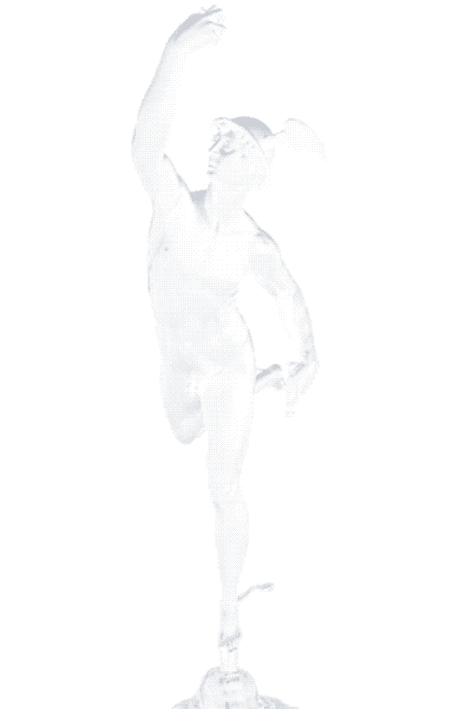

01 · INGEST
Every applicant
arrives as a clean card.
Forward the emails. Mercury reads each one for name, experience, skills, and the original CV, and never loses a single applicant.

Mercury turns your inbox of applicants into a calm, skimmable board — with HK salary context on every role and one-click replies in your name. Built for Hong Kong hiring. Free to use.
Forward the emails. Mercury reads each one for name, experience, skills, and the original CV, and never loses a single applicant.
A persistent board from New to Hired. Filter on facts you choose, with honest Hong Kong salary context beside every role — so you know what the job really pays before you make an offer. Market data, clearly labelled, never a score. Nothing is ranked as judgement or quietly hidden by a machine.
One click sends a reply in your name — so you look professional and never leave a candidate waiting. Responsive employers win more offers. Every applicant is still seen by a human and hears back. That is the whole promise.
Mercury carried word between worlds and never kept anyone in the dark. The tool is built the same way: fast, exact, and humane.